Photos prises sur les sites touristiques
Sya:l'origine,le quartier emblématique de la ville de Bobo-Dioulasso

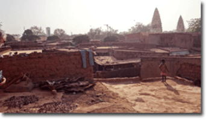

La vielle mosquee de DIOULASSOBA


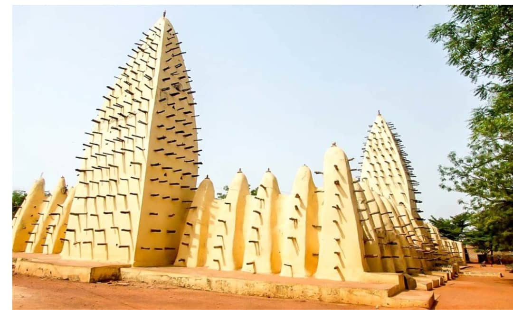
La Cathédrale Notre-Dame-de-Lourdes
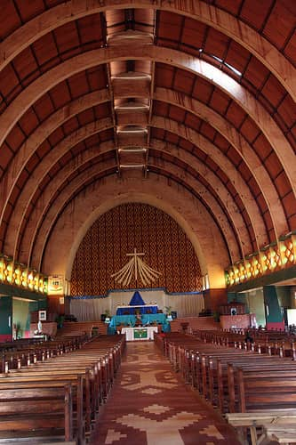

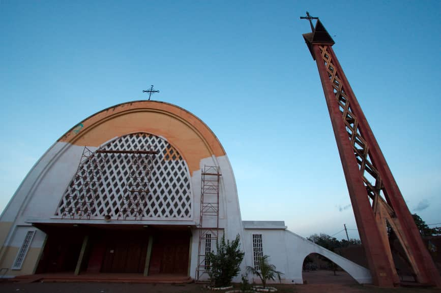
Le Musée communal Sogossira Sanon
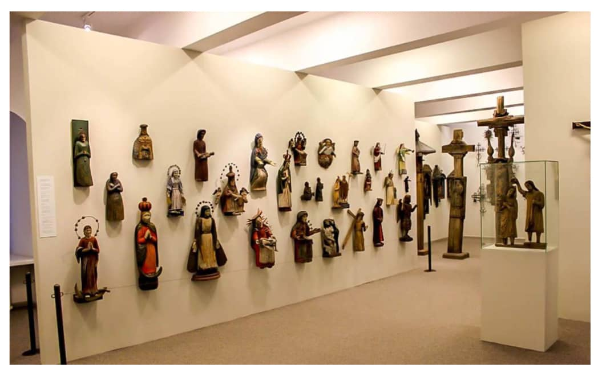

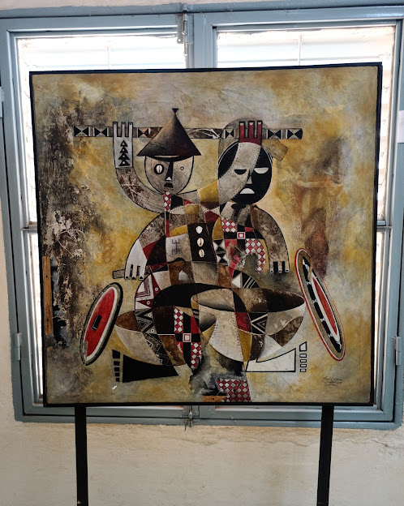

Le Mausolée de la princesse Guimbi OUATTARA
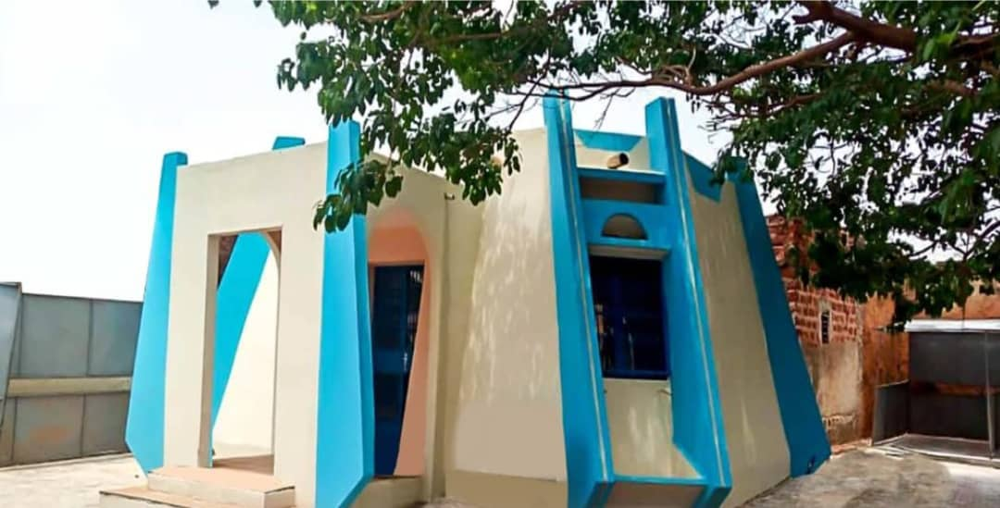

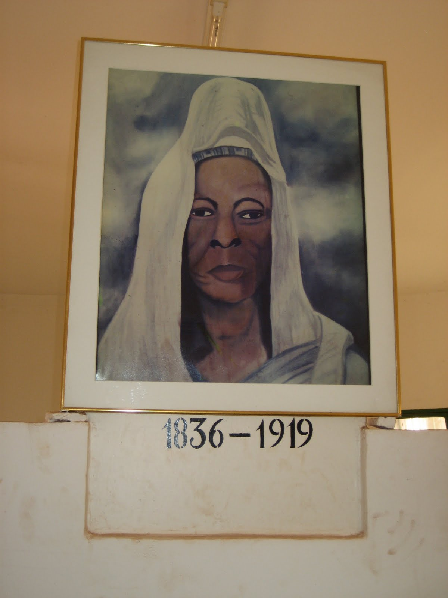
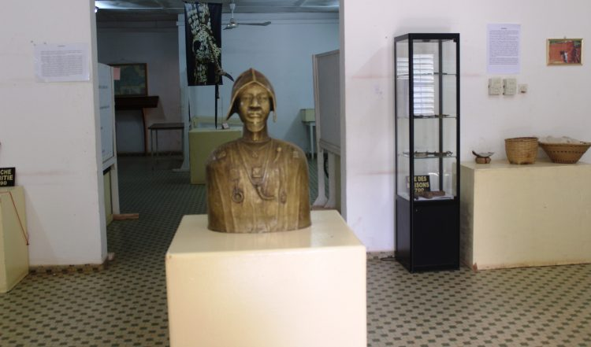


Le Monument du Cinquantenaire
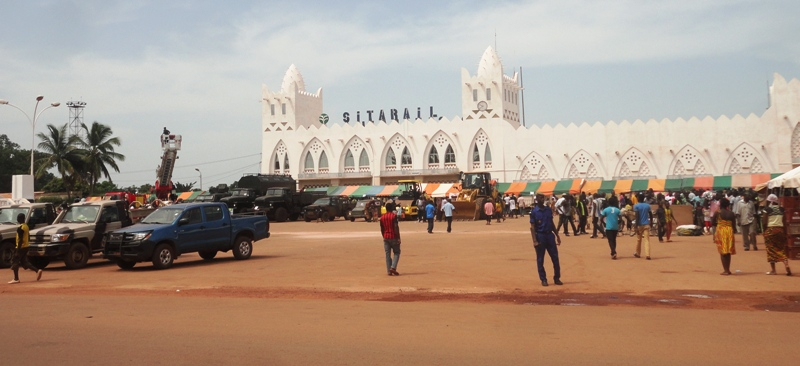
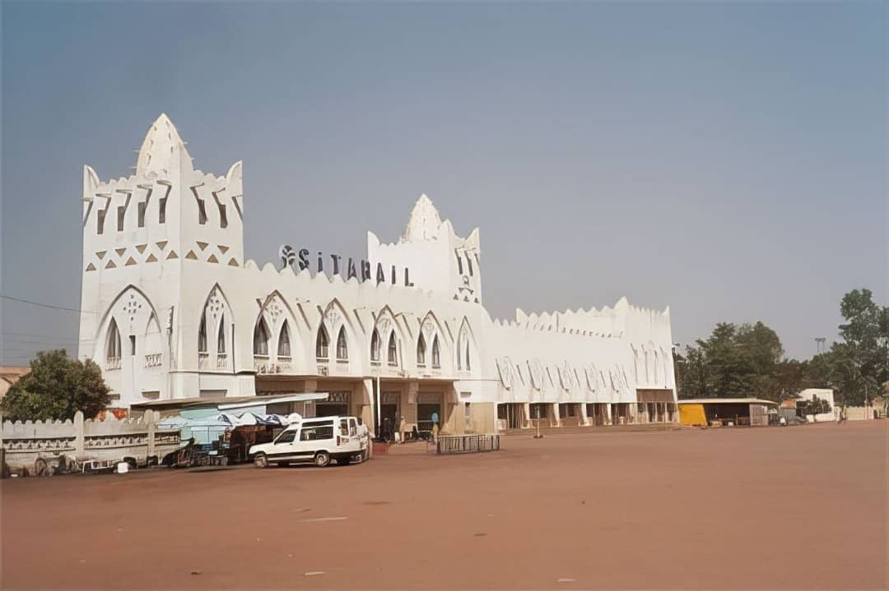
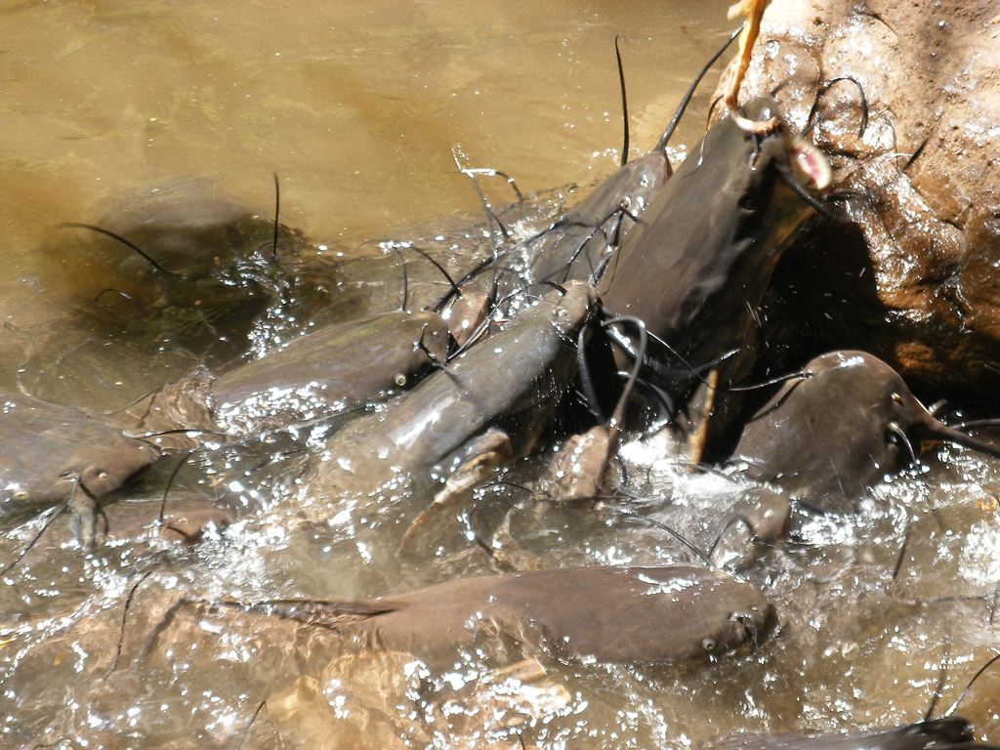

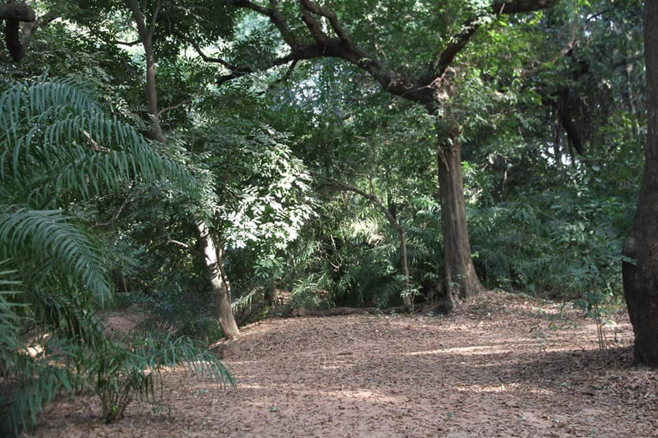
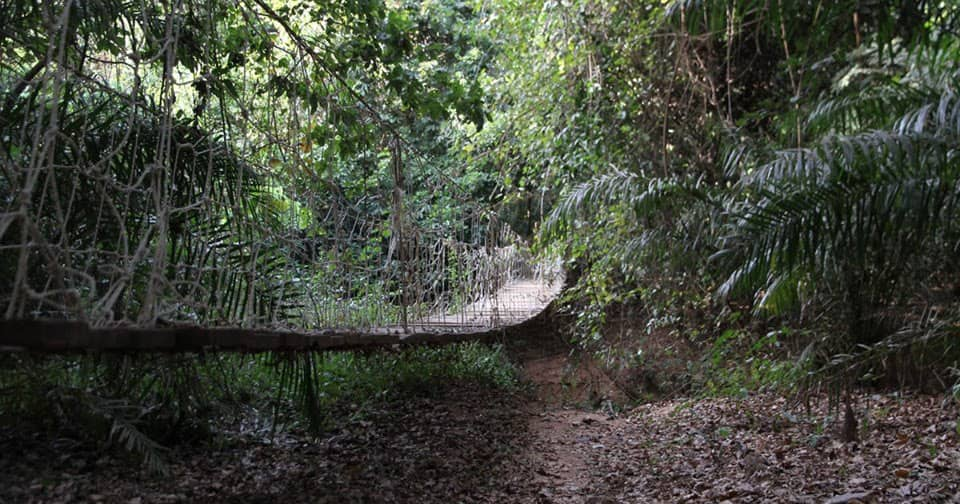
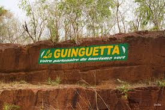
Revenir à l'accueil: